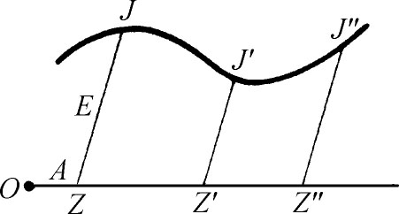

2．费马的坐标几何
在他的数论工作中，费马从丢番图出发。他关于曲线的工作，则从研究希腊的几何学家，特别是阿波罗尼斯开始，阿波罗尼斯的《论平面轨迹》（On Plane Loci）一书，久已失传，而费马却是把它重新写出的人之一。他对代数作了贡献之后，准备把它用来研究曲线。这一点他在上述小书《轨迹引论》中做了。他说他打算发起一个关于轨迹的一般研究，这种研究是希腊人没有做到的。费马的坐标几何究竟是怎样产生的，我们不知道。费马是熟悉韦达用代数解决几何问题的用法的，但更可能的是他把阿波罗尼斯的结果直接翻译成代数的形式。
他考虑任意曲线和它上面的一般点J（图15.1）。J的位置用A，E两字母定出：A是从点O沿底线到点Z的距离，E是从Z到J的距离。他所用的坐标就是我们所说的倾斜坐标，但是y轴没有明白出现，而且不用负数。他的A，E就是我们的x，y。

图15.1
费马早就叙述出他的一般原理：“只要在最后的方程里出现了两个未知量，我们就得到一个轨迹，这两个量之一，其末端就描绘出一条直线或曲线。”图中对于不同位置的E，其末端J，J′，J″，…就把“线”描出。他的未知量A和E，实际上是变数，或者可以说，联系A和E的方程是不确定的。在这里，费马用韦达的办法，让一个字母代表一类的数，然后写出联系A和E的各种方程，并指明它们所描绘的曲线。例如，他写出“D in A aequetur B in E”（用我们的记号就是Dx＝By）并指明这代表一条直线。他又给出（以下用我们的写法）d（a-x）＝by，并肯定它也代表一条直线。方程B2-x2＝y2代表一个圆，a2-x2＝ky2代表一个椭圆，a2＋x2＝ky2和xy＝a各代表一条双曲线，而x2＝ay代表一条抛物线。因费马不用负坐标，他的方程不能像他所说代表整个曲线，但他确实领会到坐标轴可以平移或旋转，因为他给出一些较复杂的二次方程，并给出它们可以简化到的简单形式，他肯定：一个联系着A和E的方程，如果是一次的，就代表直线轨迹，如果是二次的，就代表圆锥曲线。在他的《求最大值和最小值的方法》（Methodus ad Disquirendam Maximam et Minimam，1637）(3)中，他引进了曲线y＝xn和y＝x-n。